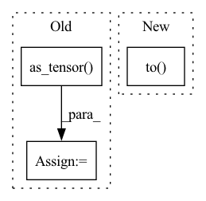

Pattern ID :20812
Before Change
//_probs *= torch.tensor(_probs <= 1, dtype=self._dtype) //! Values larger than 1 are set to 0
_sample = torch.bernoulli(_probs)
_sample = torch.as_tensor( _sample, dtype=self._dtype)
self.sample_cache = _sample
return _sample
After Change
def _sample(self, n_samples=1):
if n_samples > 1:
sample_shape = np.concatenate([[n_samples], self.batch_shape], axis=0).tolist()
_probs = self._probs * torch.ones(sample_shape).to( self.device)
else:
_probs = self._probs// * torch.ones(self.batch_shape)
//_probs *= torch.tensor(_probs <= 1, dtype=self._dtype) //! Values larger than 1 are set to 0In pattern: SUPERPATTERN
Frequency: 4
Non-data size: 3
Instances Fragment ID: 67034078
Project Name: thuwzy/zhusuan-pytorch
Commit Name: 469952182242e83daa63b12dd50c43b734e19ec4
Time: 2021-08-18
Author: wang-zy21@mails.tsinghua.edu.cn
File Name: zhusuan/distributions/bernoulli.py
M Class Name: Bernoulli
N Class Name: Bernoulli
M Method Name: _sample(2)
N Method Name: _sample(2)
M Parent Class: Distribution
N Parent Class: Distribution
M File Name: zhusuan/distributions/bernoulli.py
N File Name: zhusuan/distributions/bernoulli.py
M Start Line: 52
M End Line: 59
N Start Line: 52
N End Line: 53
Before Change
adj_matrix = (U * V) @ U.T
adj_matrix[adj_matrix < 0] = 0.
adj_matrix = torch.as_tensor( adj_matrix, dtype=torch.float)
V = torch.as_tensor(V, dtype=torch.float)
U = torch.as_tensor(U, dtype=torch.float)
data.V, data.U = V.to(device), U.to(device)After Change
edge_index, edge_weight = from_scipy_sparse_matrix(sp.csr_matrix(adj_matrix))
data.V, data.U = V.to(device), U.to(device)
data.edge_index, data.edge_weight = edge_index.to(device), edge_weight.to( device)
return data
def __repr__(self) -> str:
return f"{self.__class__.__name__}(K={self.K})" Fragment ID: 67034082
Project Name: edisonleeeee/graphwar
Commit Name: fa8487482e49bcdca312cb4f52139cf146ff7c67
Time: 2022-05-31
Author: cnljt@outlook.com
File Name: graphwar/defense/purification.py
M Class Name: Eigendecomposition
N Class Name: Eigendecomposition
M Method Name: __call__(3)
N Method Name: __call__(3)
M Parent Class: BaseTransform
N Parent Class: BaseTransform
M File Name: graphwar/defense/purification.py
N File Name: graphwar/defense/purification.py
M Start Line: 117
M End Line: 137
N Start Line: 117
N End Line: 136
Before Change
)
else:
temp = np.load(init_file)
self.W.data = torch.as_tensor( temp) .float()
def forward(self, inp):
// Assume input of shape n_batch x n_comp x TAfter Change
def __init__(self, n_comp=100, n_freq=513, init_file=None, device="cuda"):
super(NMFDecoder, self).__init__()
self.W = nn.Parameter(
0.1 * torch.rand(n_freq, n_comp), requires_grad=True
).to( device)
self.activ = nn.ReLU()
// we need to fix this! we should download from HF
if init_file is not None: Fragment ID: 67034080
Project Name: speechbrain/speechbrain
Commit Name: b32e61713801c840a551126e7c20c6529b1ebd28
Time: 2022-11-29
Author: csubakan@gmail.com
File Name: speechbrain/lobes/models/L2I.py
M Class Name: NMFDecoder
N Class Name: NMFDecoder
M Method Name: __init__(5)
N Method Name: __init__(5)
M Parent Class: nn.Module
N Parent Class: nn.Module
M File Name: speechbrain/lobes/models/L2I.py
N File Name: speechbrain/lobes/models/L2I.py
M Start Line: 105
M End Line: 120
N Start Line: 126
N End Line: 135